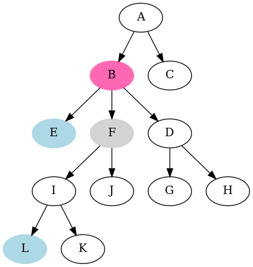

Content
| Author: | Wojciech Muła |
|---|---|
| Added on: | 2023-02-05 |
There are several approaches to find lowest common ancestor (LCA).
The algorithm showed here does not need extra memory. There's an assumption that we can get the parent node of given node in constant time.
The main idea is to first move node pointers to the same depth. When the nodes are at the same level, then finding their LCA requires just moving both pointers upwards until they meet.
For instance, if we want to find the LCM of nodes L and E, we first move the pointer to L until it reaches level of E — it's node F. Then we move both pointers upwards and they meet at B which is LCM(L, E).
Algorithm:
function LCM(node1, node2)
begin
-- part 1
1. d1 = depth(node1)
2. d2 = depth(node2)
3. if d1 > d2 then
4. for i := 0 to d1 - d2 loop
5. node1 = parent(node1)
6. endloop
7. else if d2 > d1 then
8. for i := 0 to d2 - d1 loop
9. node1 = parent(node1)
10. endloop
11. endif
-- part 2
12. while node1 != node2 loop
13. node1 = parent(node1)
14. node2 = parent(node2)
15. endloop
16. return node1
end
function depth(node)
begin
n := 0
while node loop
node = parent(node)
n += 1
endloop
return n
end
Let h be maximum depth of the input nodes.
To find node's depth we need to traverse the tree from the node to the root; it's done twice (lines 1 and 2).
Then we move one of node pointers up in the tree (lines 3-11). The maximum number of iterations in the for loops (lines 4-6 and lines 8-19) equals to h.
The final while-loop (lines 12-15) also may iterate up to h times.
Thus the asymptotic complexity is O(h).
The exact numbers of parent invocations:
Sample source code is available on Github.